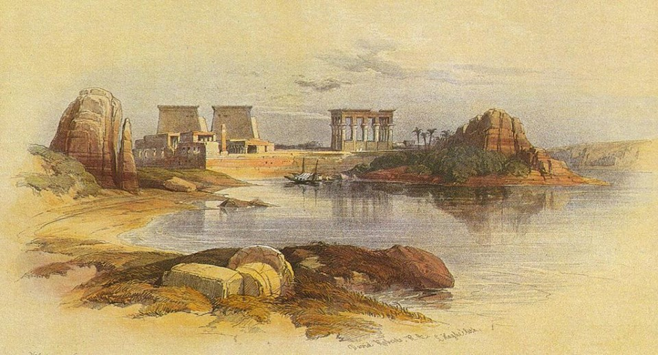

Krajobrazy Rilkego
Wyspa File
„Naszym oczom ukazuje się całe życie nad brzegami — od życia ptaków aż po zwyczajny bieg życia wsi, brązowych i jednobarwnych, schodzących stopniami ku wielkiej, błogosławionej rzece. Gromady pasterzy i kupców, procesje pogrzebowe przeciskające się w pośpiechu, pojedyncze sylwetki kobiet noszących wodę” — pisał Rilke z podróży statkiem w górę Nilu aż do wyspy File i Asuanu, rozkoszując się „nocami, kiedy to bezmiar przestrzeni traktuje człowieka, jak gdyby był płatkiem róży”.
David Roberts „Ruiny świątyni na wyspie File”, 1838